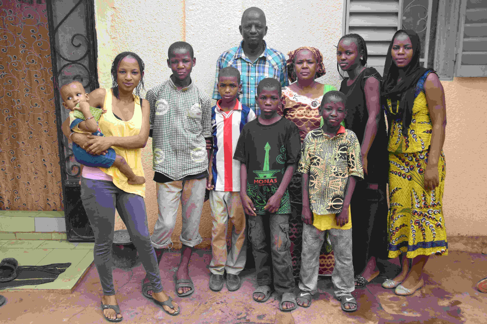

Born: 2005
Grade 7
A 12 éves hetedikes kisfiú négygyermekes család harmadik gyereke, idősebb testvérei jártak iskolába. Az 55 éves papa kovács, a 45 éves mama felvásárolja másoktól a zöldségeket és a piacon árulja. Szülei nem jártak iskolába, írástudatlanok, csak bambarául beszélnek. Az édesapa vasárus, a mama otthon van a gyerekekkel. A papa családja együtt él egy nagy udvarban, amelyet részben a szomszédos gazdagabb kerek, oszlopokon álló terasza árnyékol. A terasz alatt kecskéket tartanak, időnként patkány rohan át a nagy betonlapokkal kövezett udvaron. A kisfiú kiemelkedően jó tanuló, 9. a 70 fős osztályban, az átlaga 7/10. Naponta háromszor tudnak enni adni a gyerekeknek. Kedvence a matematika, futballista akar lenni, kedvence Ronaldo és a Reál Madrid.
For more information contact us at: info@kozelafrikahoz.hu